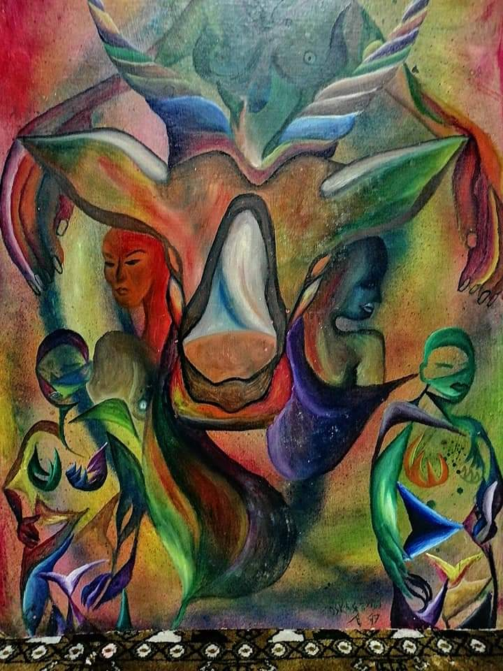

El Guardián del Tótem
Técnica mixta
Esta imponente obra presenta una compleja y simétrica composición de carácter mitológico y surrealista. En el eje central domina la majestuosa cabeza de una deidad animal totémica, reminiscente de un ciervo o un toro sagrado, en cuyo rostro se abre una cavidad ovoide, pulida y brillante, que simula un portal místico. De la propia estructura del tótem y a sus costados emergen rostros humanos estilizados en perfiles contrastantes de color rojo y azul profundo. En la parte inferior, dos figuras guardianas de un vibrante color verde y adornadas con símbolos elementales (fuego y geometría sagrada) custodian la base. Con una paleta cromática saturada que transita por gradientes psicodélicos, la pieza evoca un misticismo ancestral, transmitiendo una profunda sensación de protección, comunión espiritual y respeto por las fuerzas de la naturaleza.
Lo que el artista quiso expresar
"Cada línea y cada color rinden homenaje a la sabiduría que reside en nuestras raíces más primitivas. El tótem no es un objeto, sino un espejo de la conciencia colectiva; las figuras humanas que brotan de él representan las almas protectoras encargadas de custodiar el vacío sagrado de la creación y la memoria de la tierra."